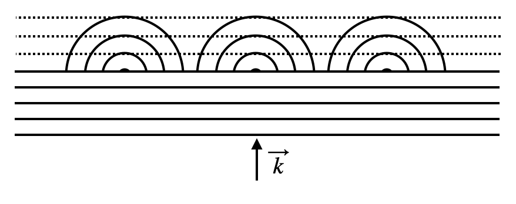
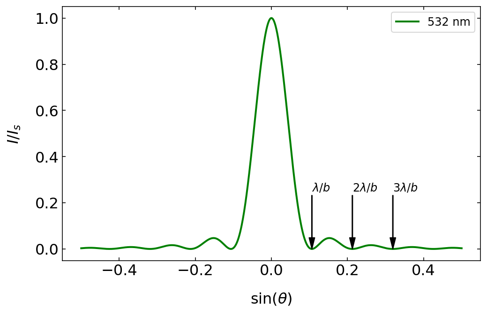

Formulated by Christiaan Huygens in 1678, Huygens’ principle states that every point on a wavefront acts as a source of secondary spherical wavelets that spread out in the forward direction. The new position of the wavefront at any later time is found by constructing a surface tangent to these secondary wavelets. This principle provides a powerful method for analyzing wave propagation and explains various wave phenomena such as reflection, refraction, and diffraction.

Illustration of Huygens’ principle for a plane wave incident with a wave vector \(\vec{k}\). Each point on the wavefront acts as a source of secondary wavelets, and the new wavefront is the envelope of these wavelets.
Huygens’ principle can be demonstrated numerically and visually. By placing a large number of spherical wave sources closely along a line and allowing their waves to interfere, we can reconstruct a plane wavefront propagating in the forward direction, illustrating how a plane wave advances according to Huygens’ concept.
Numerical demonstration of Huygens’ principle used to recreate a plane wave from a set of spherical waves. The graph on the left shows the amplitude of a single spherical wave of wavelength \(\lambda=532\) nm. By arranging 500 spherical wave sources densely along the x-axis at \(z=0\), all in phase (representing the phase of the incident plane wave at \(z=0\)), we can recreate the plane wavefronts for \(z>0\) (middle) and the constant intensity distribution (right).
Mathematically, this phenomenon can be described using our earlier treatment of multi-wave interference. Consider \(M\) spherical wave sources arranged along the x-axis at \(z=0\), each separated by a small distance \(d\) from its neighbor. At a point far away from the sources (in the far-field approximation), the path difference between waves from adjacent sources leads to a phase difference given by:
\[
\Delta \phi = \frac{2\pi d \sin \theta }{\lambda}
\]
where \(\theta\) is the angle relative to the z-axis (the forward direction), and \(\lambda\) is the wavelength of the waves. The superposition of these waves results in an intensity pattern described by:
\[
I(\theta) = I_0 \frac{\sin^2\left ( M \frac{\pi d \sin \theta }{\lambda} \right )}{\sin^2\left ( \frac{\pi d \sin \theta }{\lambda} \right )}
\]
This expression arises from the interference of \(M\) waves with a constant phase difference \(\Delta \phi\) between neighboring waves. The numerator represents the constructive and destructive interference due to the finite number of sources, and the denominator accounts for the spacing between them.
This mathematical framework serves as the foundation for understanding diffraction phenomena, particularly in two important cases:
Single-Slit Diffraction: When Huygens’ wavelets are confined to a finite width (the slit width), the interference between these wavelets produces a characteristic diffraction pattern with a central maximum and diminishing side lobes.
Diffraction Gratings: When multiple slits are arranged periodically, the interference of the transmitted waves leads to sharp diffraction maxima at specific angles, making diffraction gratings powerful tools for spectroscopic analysis.
While we commonly use the term “diffraction” to describe these phenomena, they are fundamentally due to the interference of waves, as explained by Huygens’ principle. By considering every point on a wavefront as a source of secondary wavelets, we can understand and predict the complex patterns that arise when waves encounter obstacles or apertures.
Single Slit Diffraction
We now apply our interference formula to study the diffraction of an incident plane wave (wavevector \(\vec{k}\)) on a single slit of width \(b\). We can model this by placing a series of Huygens sources along the slit opening. While the sketch below shows just 3 sources for clarity, we’ll generalize this to \(M\) sources.
We divide the slit into segments of width \(\Delta b\) such that we have \(M=b/\Delta b\) Huygens sources, each with amplitude \(A_0=\sqrt{I_0}\). Applying our previous multi-wave interference formula with spacing \(d=\Delta b\), we obtain:
For convenience, let’s substitute \(x=\pi \frac{b}{\lambda}\sin(\theta)\), giving:
\[
I=I_0\frac{\sin^2(x)}{\sin^2(x/M)}
\]
In reality, we have a continuous distribution of sources across the slit width, corresponding to \(M\to\infty\). In this limit, for the denominator, \(x/M\) becomes very small, and we can use the small-angle approximation:
This formula describes the characteristic diffraction pattern of a single slit, with a central maximum and symmetric side lobes of decreasing intensity.
Single Slit Diffraction
The intensity distribution generated by the diffraction of monochromatic light on a single slit and observed in the far field is given by
where \(\lambda\) is the wavelength of the light and \(b\) the width of the slit. The angle of observation is given by \(\theta\). Note that the diffraction pattern on any aperture is resulting from the fact that you remove Huygens sources that would be normally needed to form a plane wavefront for example.
Fourier Transform and Diffraction
The intensity distribution generated by the diffraction of monochromatic light on a single slit and observed in the far field is given by
where \(\lambda\) is the wavelength of the light and \(b\) the width of the slit. The angle of observation is given by \(\theta\). Note that the diffraction pattern on any aperture is resulting from the fact that you remove Huygens sources that would be normally needed to form a plane wavefront for example.
This diffraction pattern can be understood as the Fourier transform of the aperture function. In the case of a single slit, the aperture function is a rectangular function, and its Fourier transform is a sinc function. This relationship between the aperture and its diffraction pattern is a fundamental concept in wave optics and is widely used in various applications, including imaging and signal processing.
Total wave amplitude behind a slit (b=2µm) for an incident wave of 532 nm wavelength. The plot in the middle shows the intensity in the space behind the slit. The graph on the right displays the diffraction pattern at a screen at 100 µm distance from the slit.
Let’s have a look at some of the properties of the intensity distribution.
The single-slit diffraction pattern shows characteristic features that we can observe in both theoretical calculations and experimental measurements. The intensity distribution is described by an oscillating function with decreasing amplitude. The oscillations arise from the \(\sin^2\) term in the numerator, while the decay comes from the square term in the denominator.

Diffraction patterns as a function of the sine of the diffraction angle. The minima of the diffraction pattern in this plot are at integer multiples of \(\lambda/b\).
The graphs above illustrate two key relationships in single-slit diffraction:
The effect of wavelength: When comparing patterns for different wavelengths (with fixed slit width \(b=5\,\mathrm{\mu m}\)), longer wavelengths produce broader diffraction patterns
The effect of slit width: For the same wavelength, reducing the slit width to \(b=2.5\,\mathrm{\mu m}\) results in a broader diffraction pattern
These observations can be quantified by analyzing the positions of intensity minima. The intensity goes to zero when the argument of the sine function in the numerator equals multiples of π:
\[
\pi \frac{b}{\lambda}\sin(\theta) = m\pi
\]
where \(m\) is an integer. This simplifies to:
\[
\sin(\theta)=m\frac{\lambda}{b}
\]
This relationship reveals a fundamental principle in diffraction: the angular spread of the pattern is proportional to the ratio of wavelength to the size of the diffracting object (\(\lambda/b\)). While the exact mathematical form may vary for different geometries, this basic scaling remains valid.
Figure 1— Diffraction patterns on a single slit as observed in the lecture. The left image shows the diffraction pattern for red light, while the right image combines two different wavelengths (red, blue), where one clearly recognizes the wider diffraction peaks for the longer red wavelength.
The experimental observations above clearly demonstrate these principles, particularly showing how red light (longer wavelength) produces a broader diffraction pattern than blue light (shorter wavelength).
Circular Aperture
For a circular aperture, the diffraction pattern follows a more complex mathematical form involving Bessel functions. The intensity distribution is given by:
Here, \(R\) is the radius of the aperture. While similar to the sine function, the Bessel function has zeros at different positions: \(x_1=1.22\pi\), \(x_2=2.23\pi\), and so on.
Diffraction pattern of a circular aperture of radius \(5\) µm. Note that the intensity scale is saturated. The diffraction rings would otherwise not be visible. The minima of the diffraction pattern in this plot are at integer multiples of \(0.61\lambda/R\).
The first minimum of the diffraction pattern occurs when:
This follows the same general principle we’ve seen before: the angular spread is proportional to wavelength divided by aperture size. The central bright region up to this first minimum is known as the Airy disc, and in microscopy, this defines a resolution element or resel.
Application: Diffraction Grating
We now combine the concepts of single-slit diffraction and multiple-wave interference to understand the behavior of diffraction gratings. Diffraction gratings are important in spectroscopy and the compression of short laser pulses.
Consider a diffraction grating with \(N\) slits, each of width \(b\), and separated by a distance \(d\). Each slit acts as a source of diffraction, producing an intensity pattern that oscillates with decreasing amplitude. The width of this diffraction pattern is determined by \(\lambda/b\), and the pattern is given by:
This formula describes the intensity pattern produced by a diffraction grating, which is the product of the single-slit diffraction pattern and the multiple-slit interference pattern.
Diffraction Grating
The intensity distribution generated by a diffraction grating from monochromatic light and observed in the far field is given by
where \(\lambda\) is the wavelength of the light, \(b\) is the width of the slit, \(d\) is the distance between the slits, and \(N\) is the number of slits illuminated. The angle of observation is given by \(\theta\).
Properties of the Diffraction Pattern
Let’s examine the properties of this intensity distribution. The graph below shows the intensity distribution for a diffraction grating with \(N=8\) slits, a slit distance of \(d=4\) µm, a slit width of \(b=2\) µm, and a wavelength of 532 nm. We observe the following general properties:
The intensity pattern consists of main maxima, called diffraction orders, characterized by integer numbers. The central peak is the 0th order peak, the first main peak to the right is the 1st diffraction order, and so on.
The main peaks are separated by \(N-2\) secondary peaks and \(N-1\) minima.
The intensity distribution is characterized by an envelope, which is the diffraction pattern of a single slit (dashed line). In the example below, the 2nd order peak is suppressed. The envelope becomes wider if the slits become narrower.
Position of the Main Peaks
The position of the main peaks is determined by the condition that the denominator of the multiple-slit interference term is zero. This occurs when the argument is an integer multiple of \(\pi\), i.e., \(\pi \frac{d}{\lambda} \sin(\theta) = m\pi\), or:
\[
\sin(\theta) = m \frac{\lambda}{d}
\]
where \(m\) is an integer. The first-order diffraction maximum is found at \(\sin(\theta) = \frac{\lambda}{d}\), independent of the number of slits \(N\). This means that the position of the main peaks increases linearly with the wavelength \(\lambda\) and decreases with increasing slit distance \(d\).
Code
# ParametersN =8# Number of slitsb =2e-6# Slit width in metersd =4e-6# Separation between slits in meterswavelength =532e-9# Wavelength of light in meters# Diffraction angle rangetheta = np.linspace(-np.pi/2, np.pi/2, 1000)sin_theta = np.sin(theta)# Calculate the intensitybeta = (np.pi * b / wavelength) * sin_thetagamma = (np.pi * d / wavelength) * sin_thetasingle_slit = (np.sin(beta) / beta)**2multi_slit = (np.sin(N * gamma) / np.sin(gamma))**2# Handle division by zero for beta and gammasingle_slit[np.isnan(single_slit)] =1multi_slit[np.isnan(multi_slit)] = N**2intensity = single_slit * multi_slit# Plot the intensityplt.figure(figsize=get_size(12, 8))plt.plot(sin_theta, intensity/np.max(intensity),label='Intensity')plt.plot(sin_theta, single_slit, 'r--',label='Single Slit')plt.xlabel(r'$\sin(\theta)$')plt.ylabel(r'$I/I_{max}$')plt.xlim(-0.5,0.5)plt.show()
Diffraction pattern of a grating where 8 slits with a width of 2 µm and a distance of 4 micrometers are illuminated by a wavelength of 532 nm.
Influence of the Slit Width
The two plots below show the influence of the slit width while keeping the slit distance the same. We have \(N=8\) slits with \(d=4\) µm, while the slit width is \(b=2\) µm on the left side and \(b=1\) µm on the right side. The result is an increased width of the envelope. The first minimum of the slit diffraction pattern occurs at \(\sin(\theta) = \frac{\lambda}{b}\).
Code
# ParametersN =8# Number of slitsd =4e-6# Separation between slits in meterswavelength =532e-9# Wavelength of light in meters# Diffraction angle rangetheta = np.linspace(-np.pi /2, np.pi /2, 1000)sin_theta = np.sin(theta)def calculate_intensity(N, b, d, wavelength, sin_theta): beta = (np.pi * b / wavelength) * sin_theta gamma = (np.pi * d / wavelength) * sin_theta# Single slit intensity pattern using sinc function single_slit = (np.sinc(beta / np.pi))**2# Multi-slit interference pattern multi_slit = np.ones_like(gamma) gamma_nonzero = gamma !=0 multi_slit[gamma_nonzero] = (np.sin(N * gamma[gamma_nonzero]) / np.sin(gamma[gamma_nonzero]))**2 multi_slit[~gamma_nonzero] = N**2 intensity = single_slit * multi_slitreturn single_slit, intensity# Plottingfig, ax = plt.subplots(1, 2, figsize=get_size(18, 8))# First plot with b = 2e-6b =2e-6single_slit, intensity = calculate_intensity(N, b, d, wavelength, sin_theta)ax[0].plot(sin_theta, intensity / np.max(intensity), label='Intensity')ax[0].plot(sin_theta, single_slit, 'r--', label='Single Slit')ax[0].set_xlabel(r'$\sin(\theta)$')ax[0].set_ylabel(r'$I/I_{max}$')ax[0].set_xlim(-0.5, 0.5)ax[0].legend()# Second plot with b = 1e-6b =1e-6single_slit, intensity = calculate_intensity(N, b, d, wavelength, sin_theta)ax[1].plot(sin_theta, intensity / np.max(intensity), label='Intensity')ax[1].plot(sin_theta, single_slit, 'r--', label='Single Slit')ax[1].set_xlabel(r'$\sin(\theta)$')ax[1].set_ylabel(r'$I/I_{max}$')ax[1].set_xlim(-0.5, 0.5)ax[1].legend()plt.tight_layout()plt.show()
Diffraction pattern of a grating with \(N=8\) slits (\(d=4\) µm, \(b=1\) µm) with \(\lambda=532\) nm.
Influence of the Slit Number
When increasing the number of slits, the main diffraction peaks become sharper. The location of the main peaks for a given wavelength remains unchanged, but there are now \(N-2\) secondary maxima in between. This decreased width of the main peaks is important for the spectral resolution of the grating.
Code
N =100# Number of slitsb =1e-6# Slit width in metersd =4e-6# Separation between slits in meterswavelength =532e-9# Wavelength of light in meters# Diffraction angle rangetheta = np.linspace(-np.pi/2, np.pi/2, 10000)sin_theta = np.sin(theta)# Calculate the intensitybeta = (np.pi * b / wavelength) * sin_thetagamma = (np.pi * d / wavelength) * sin_thetasingle_slit = (np.sin(beta) / beta)**2multi_slit = (np.sin(N * gamma) / np.sin(gamma))**2# Handle division by zero for beta and gammasingle_slit[np.isnan(single_slit)] =1multi_slit[np.isnan(multi_slit)] = N**2intensity = single_slit * multi_slit# Plot the intensityplt.figure(figsize=get_size(12, 8))plt.plot(sin_theta, intensity/np.max(intensity),label='Intensity')plt.plot(sin_theta, single_slit, 'r--',label='Single Slit')plt.xlabel(r'$\sin(\theta)$')plt.ylabel(r'$I/I_{max}$')plt.xlim(-0.5,0.5)plt.show()
Diffraction pattern of a grating with \(N=100\) slits (\(d=4\) µm, \(b=1\) µm) with \(\lambda=532\) nm.
Spectral Resolution
To quantify the spectral resolution, we use a criterion similar to the optical resolution of a microscope: two peaks are separable if the second peak is located at the minimum of the first diffraction pattern. Here, the diffraction patterns refer to different wavelengths \(\lambda_1\) and \(\lambda_2\).
Rayleigh resolution limit of a grating with \(N=100\) slits (\(d=4\) µm, \(b=1\) µm) with \(\lambda_1=532\) nm and \(\lambda_2=537\) nm in the first order diffraction peak (left) and the second order peak (right).
Consider the \(m\)th order diffraction peak for the wavelength \(\lambda_1\). This occurs at:
\[
\sin(\theta) = m \frac{\lambda_1}{d}
\]
The next secondary minimum to larger angles of the diffraction pattern is located where the numerator of the multiple-wave interference term:
\[
N \pi \frac{d}{\lambda} \sin(\theta) = l \pi
\]
becomes a multiple \(l\) of \(\pi\). For the first-order main peak, we have \(N-2\) intermediate peaks as well as the 0th and now the first-order peak. Therefore, \(m = l/N\), and the next minimum after the 1st order peak is at:
This angle must correspond to the position of the main peak of the first-order diffraction of the wavelength \(\lambda_2\), so:
\[
\sin(\theta_1) = m \frac{\lambda_2}{d}
\]
Combining both equations for the two wavelengths yields:
\[
\left(m + \frac{1}{N}\right) \frac{\lambda_1}{d} = m \frac{\lambda_2}{d}
\]
and after some rearrangements (setting \(\lambda_1 = \lambda\)):
\[
R = \frac{\lambda}{\Delta \lambda} = mN
\]
This is the resolving power \(R\) of a grating. The ability to resolve two wavelengths increases with the diffraction order \(m\) and the number of slits used for the diffraction. However, the intensity of higher diffraction orders rapidly decreases due to the grating envelope. Therefore, the main parameter to change is the number of illuminated slits.
Our finding is illustrated in the figure above, where we achieve a resolution of about 5 nm when using \(N=100\) slits at a distance of \(d=4\) µm.
Diffraction pattern observed for a grating in the lecture with red light (left) and white light (right).
Diffraction pattern observed for a grating in the lecture with red light (left) and white light (right).
Figure 2— Diffraction pattern observed for a grating in the lecture with red light (left) and white light (right).
Diffraction Grating Playground
532 nm
2 µm
8
App to play with the parameters of a grating with a slit distance of 4 µm and a slit width of 2 µm.